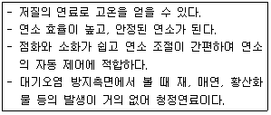
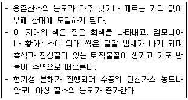
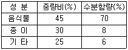

환경기능사 (2012-02-12 기출문제)
1과목: 대기오염방지
1. 수소 10%, 수분 5% 인 중유의 고위 발열량이 10000kcal/kg일 때 저위발열량(kcal/kg)은?
- 9310
- 9430
- 9590
- 9720
(정답률: 70%)

2. 원심력 집진장치에 관한 설명으로 옳지 않은 것은?
- 구조가 간단하고 취급이 용이한 편이다.
- 압력손실이 20mmH2O 정도로 작고, 고집진율을 얻기 위 한 전문적인 기술이 불필요하다.
- 점(흡)착성 배출가스 처리는 부적합하다.
- 블로우다운 효과를 사용하여 집진효율 증대가 가능하다.
(정답률: 74%)
3. 직경이 30cm, 길이가 15m인 여과자루를 사용하여 농도가 3g/m3의 배출가스를 1000m3/min으로 처리하였다. 여과속도 가 1.5cm/s일 때 필요한 여과자루의 개수는?
- 75개
- 79개
- 83개
- 87개
(정답률: 51%)
4. 대기상태가 중립조건 일 때 발생하며, 연기의 수직 이동 보다 수평 이동이 크기 때문에 오염물질이 멀리까지 퍼져 나가며 지표면 가까이에는 오염의 영향이 거의 없으며, 이 연기내에서는 오염의 단면분포가 전형적인 가우시안분 포를 나타내는 연기 형태는?
- 환상형
- 부채형
- 원추형
- 지붕형
(정답률: 59%)
5. (CO2)max는 어떤 조건으로 연소시켰을 때 연소가스 중 이산화탄소의 농도를 말하는가?
- 공급할 수 있는 최대공기량으로 과잉연소 시켰을 때
- 이론 공기량으로 완전연소 시켰을 때
- 과잉 공기량으로 부족연소 시켰을 때
- 부족 공기량으로 부족연소 시켰을 때
(정답률: 70%)
6. 직경이 200mm인 표면이 매끈한 직관을 통하여 125m3/min의 표준공기를 송풍할 때, 관내 평균풍속(m/s)은?
- 약 50m/s
- 약 53m/s
- 약 60m/s
- 약 66m/s
(정답률: 40%)
7. 흡수공정으로 유해가스를 처리할 때, 흡수액이 갖추어야 할 요건으로 옳지 않은 것은?
- 휘발성이 커야 한다.
- 점성이 작아야 한다.
- 용해도가 커야 한다.
- 용매의 화학적 성질과 비슷해야 한다.
(정답률: 75%)
8. 대류권에서는 온실가스이며 성층권에서는 오존층 파괴물질로 알려져 있는 것은?
- CO
- N2O
- HCI
- SO2
(정답률: 62%)
9. 로스엔젤레스(Los Angeles)형 스모그 발생조건으로 가장 거리가 먼 것은?
- 방사성 역전형태
- 23~32℃의 고온
- 광화학적 반응
- 석유계 연료
(정답률: 67%)
10. 악취성분을 직접연소법을 처리하고자 할 때 일반적인 연소온도로 가장 적합한 것은?
- 100~150℃
- 200~300℃
- 600~800℃
- 1400~1500℃
(정답률: 72%)
11. 농황산의 비중이 약 1.84, 농도는 75% 라면 이 농황산의 몰농도(mol/L)는? (단, 농황산의 분자량은 98 이다.)
- 9
- 11
- 14
- 18
(정답률: 55%)
12. 탄소 87%, 수소 10%, 황 3%의 조성을 가진 중유 1.7kg을 완전연소시킬 때, 필요한 이론공기량(Sm3)은?
- 약 9
- 약 14
- 약 18
- 약 21
(정답률: 52%)
13. 다음 중 수세법을 이용하여 제거시킬 수 있는 오염물질로 가장 거리가 먼 것은?
- NH3
- SO2
- NO2
- CI2
(정답률: 47%)
14. 오염가스를 흡착하기 위하여 사용되는 흡착제와 가장 거리가 먼 것은?
- 활성탄
- 활성망간
- 마그네시아
- 실리카겔
(정답률: 60%)
15. 다음 중 <보기>와 같은 특성에 가장 적합한 연료는?

- 석탄
- 아탄
- 벙커C유
- LNG
(정답률: 85%)
2과목: 폐수처리
16. 해수의 특성에 관한 설명으로 옳지 않은 것은?
- 해수의 pH는 약 8.2 정도로 약 알칼리성을 지닌다.
- 해수의 주요 성분 농도비는 거의 일정하다.
- 염분은 적도해역에서는 높고, 남북 양극 해역에서는 다소 낮다.
- 해수의 Mg/Ca비는 300~400 정도로 담수보다 크다.
(정답률: 67%)
17. 20℃ 재폭기 계수가 6.0 day-1이고, 탈산소 계수가 0.2 Day-1이면 자성상수는?
- 1.2
- 20
- 30
- 120
(정답률: 47%)
18. 염소계 산화제를 이용하여 무해한 CO2와 N2로 분해시키는 보편적인 알칼리 산화법으로 처리할 수 있는 폐수는?
- 시안 함유 폐수
- 크롬 함유 폐수
- 납 함유 폐수
- PCB 함유 폐수
(정답률: 62%)
19. 하천이 유기물로 오염되었을 경우 자정과정을 오염원으로 부터 하천 유하거리에 따라 분해지대, 활발한 분해지대, 회복지대, 정수지대의 4단계로 구분한다. <보기>와 같은 특성을 나타내는 단계는?

- 분해지대
- 활발한 분해지대
- 회복지대
- 정수지대
(정답률: 81%)
20. 30m×18m×3.6m 규격의 직사각형조에 물이 가득 차 있다. 약품주입농도를 69mg/L로 하기 위해서 주입해야 할 약품량(kg)은?
- 약 214kg
- 약 156kg
- 약 148kg
- 약 134kg
(정답률: 38%)
21. 물 속의 탄소유기물이 호기성 분해를 하여 발생하는 것은?
- 암모니아
- 탄산가스
- 메탄가스
- 유화수소
(정답률: 61%)
22. 생물학적 처리방법 중 활성슬러지법에 관한 설명으로 거 리가 먼 것은?
- 산기식 포기장치에서 산기장치의 일부가 폐쇄되었을 경우 수면의 흐름이 균일하지 못하다.
- 용존성 유기물을 제거하는데 적합하다.
- 슬러지 팽화현상과 거품이 생성될 수 있다.
- 겨울철에 동결될 수 있고 연못화 현상이 발생할 수 있다.
(정답률: 70%)
23. 다음 중 하ㆍ폐수 처리시설의 일반적인 처리계통으로 가장 적합한 것은?
- 침사지 – 1차 침전지 – 소독조 – 폭기조
- 침사지 – 1차 침전지 – 폭기조 – 소독조
- 침사지 – 소독조 – 폭기조 – 1차 침전지
- 침사지 – 폭기조 – 소독조 – 1차 침전지
(정답률: 68%)
24. pH에 관한 설명으로 옳지 않은 것은?
- pH는 수소이온농도를 그 역수의 상용대수로서 나타내는 값이다.
- pH 표준액의 조제에 사용되는 물은 정제수를 증류하여 그 유출액을 15분 이상 끓여서 이산화탄소를 날려 보 내고 산화칼슘 흡수관을 달아 식힌 후 사용한다.
- pH 표준액 중 보통 산성표준액은 3개월, 염기성 표준액 은 산화칼슘 흡수관을 부착하여 1개월 이내에 사용한다.
- pH 미터는 보통 아르곤전극 및 산화전극으로 된 지시부 와 검출부로 되어 있다.
(정답률: 62%)
25. 응집침전법으로 폐수를 처리하기 전에 응집제와 응집보조 제 투여량을 결정하는 응집실험(jar test)의 일반적인 과 정을 순서대로 바르게 나열한 것은?
- 침전 → 환속교반 → 응집제와 보조제 주입 → 급속교반
- 응집제와 보조제 주입 → 급속교반 → 완속교반 → 침전
- 급속교반 → 응집제와 보조제 주입 → 완속교반 → 침전
- 완속교반 → 응집제와 보조제 주입 → 급속교반 → 침전
(정답률: 73%)
26. 침전지에서 지름이 0.1mm이고 비중이 2.65인 모래입자가 침전하는 경우 침전속도는? (단, stokes법칙을 적용, 물의 점도: 0.01g/cmㆍs)
- 0.898cm/s
- 0.792cm/s
- 0.726cm/s
- 0.625cm/s
(정답률: 35%)
27. 물 속에 녹는 산소의 양은 대기 중에 존재하는 산소의 분 압에 의존한다는 것으로 겨울철보다 기압이 낮은 여름철 에 강이나 호수에 살고 있는 어패류들의 질식현상이 자주 발생하는 원인을 설명할 수 있는 법칙은?
- 헨리의 법칙
- 라울의 법칙
- 보일의 법칙
- 헤스의 법칙
(정답률: 77%)
28. 0.⑤%는 몇 ppm 인가?
- 5ppm
- 50ppm
- 500ppm
- 5000ppm
(정답률: 68%)
29. 회분식으로 일정한 양의 에너지와 영양분을 한번만 주고 미생물을 배양했을 때 미생물의 성장과정을 순서(초기→말기) 대로 옳게 나타낸 것은?
- 대수 성장기 → 유도기 → 정지기 → 사멸기
- 유도기 → 대수 성장기 → 정지기 → 사멸기
- 대수 성장기 → 정지기 → 유도기 → 사멸기
- 유도기 → 정지기 → 대수 성장기 → 사멸기
(정답률: 73%)
30. BOD가 200mg/L이고, 폐수량이 1500m3/day인 폐수를 활성슬러지법으로 처리하고자 한다. F/M 비가 0.4kg/kgㆍday라면 MLSS 1500mg/L로 운전하기 위해서 요구되는 포기조 용적은?
- 900m3
- 800m3
- 600m3
- 500m3
(정답률: 34%)
31. 활성슬러지법의운전조건중 F/M비 (kgBOD/kg MLSS .일)는 얼마로 유지하는것이 가장적절한가?
- 200~400
- 20~40
- 2~4
- 0.2~0.4
(정답률: 57%)
32. 각 생물학적 처리방법에 관한 설명으로 옳지 않은 것은?
- 산화지법 – 수심 1m 이하의 경우 호기성 세균의 산소공 급원은 조류와 균류이다.
- 접촉산화법 – 생물막을 이용한 처리방식의 일종으로 포 기조에 접촉여재를 침적하여 포기, 교반시켜 처리한다.
- 살수여상법 – 연못화에 따른 악취, 파리의 이상번식 등 이 문제점으로 지적되고 있다.
- 회전원판법 – 미생물 부착성장형으로서 슬러지의 반송 이 필요없다.
(정답률: 52%)
33. 다음 중 환원법과 수산화제2철 공침법으로 처리할 수 있 는 폐수는?
- 염소 함유 폐수
- 비소 함유 폐수
- COD 함유 폐수
- 색도 함유 폐수
(정답률: 52%)
34. 1M H2SO4 10mL를 1M NaOH로 중화할 때 소요되는 NaOH의 양은?
- 5mL
- 10mL
- 15mL
- 20mL
(정답률: 42%)
35. 다음 중 적조현상을 발생시키는 주된 원인물질은?
- CI
- P
- Mg
- Fe
(정답률: 83%)
3과목: 폐기물처리
36. 압축기를 사용하여 어떤 쓰레기를 압축시켰더니 처음 부 피의 1/4 이 되었다. 이 때의 압축비는?
- 3/4
- 4/5
- 2
- 4
(정답률: 59%)
37. 철과 같이 재활용 가치가 높은 자원을 수거된 폐기물로부터 선별하는데 적합한 선별방법은?
- 공기선별
- 자석선별
- 부상선별
- 스크린선별
(정답률: 83%)
38. 분뇨 처리의 목적으로 가장 거리가 먼 것은?
- 최종 생성물의 감량화
- 생물학적으로 안정화
- 위생적으로 안전화
- 슬러지의 균일화
(정답률: 67%)
39. 다음 중 고정날과 가동날의 교차에 의해 폐기물을 파쇄하는 것으로 파쇄속도가 느린 편이며, 주로 목재류, 플라스틱 및 종이류 파쇄에 많이 사용되고, 왕복식, 회전식 등이 해당하는 파쇄기의 종류는?
- 냉온파쇄기
- 전단파쇄기
- 충격파쇄기
- 압축파쇄기
(정답률: 78%)
40. 다음 슬러지 처리공정 중 개량단계에 해당되는 것은?
- 소각
- 소화
- 탈수
- 세정
(정답률: 54%)
41. 다음 중 매립지에서 복토를 하여 덮개시설을 하는 목적으로 가장 거리가 먼 것은?
- 악취발생 억제
- 해충 및 야생동물의 번식방지
- 쓰레기의 비산 방지
- 식물성장의 억제
(정답률: 85%)
42. 다음 중 공기비의 정의를 옳게 나타낸 것은?
- 연소 물질량과 이론 공기량 간의 비
- 연소에 필요한 절대 공기량
- 공급 공기량과 배출가스량 간의 비
- 실제 공기량과 이론 공기량 간의 비
(정답률: 78%)
43. 투입량이 1ton/h 이고, 회수량이 600kg/h(그 중 회수대상 물질이 550kg/h)이며, 제거량은 400kg/h(그 중 회수대상 물질은 70kg/h)일 때, 회수율을 Rietema식에 의해 구하면?
- 45%
- 66%
- 76%
- 87%
(정답률: 46%)
44. 강도 10의 단색광이 정색액을 통화할 때 그 빛의 80%가 흡수되었다면 흡광도는?
- 0.097
- 0.347
- 0.699
- 80
(정답률: 51%)
45. 폐기물공정시험기준(방법)에서 방울수라 함은 20℃에서 정제수 몇 방울을 적하할 때 그 부피가 약 1mL가 되는 것을 의미하는가?
- 5
- 10
- 20
- 50
(정답률: 70%)
46. 쓰레기를 퇴비화 시킬 때의 적정 C/N비 범위는?
- 1~5
- 20~35
- 100~150
- 250~300
(정답률: 65%)
47. 어느 도시 쓰레기의 조성이 탄소 50%, 수소 5%, 산소 39%, 질소 3%, 황 0.5%, 회분 2.5% 일 때 고위발열량은? (단, 듀롱의 식 이용)
- 약 3900 kcal/kg
- 약 4100 kcal/kg
- 약 5700 kcal/kg
- 약 7440 kcal/kg
(정답률: 54%)
48. 다음은 어느 도시 쓰레기에 대하여 성분별로 수분함량을 측정한 결과이다. 이 쓰레기의 평균 수분함량(%)은?

- 31.2%
- 32.4%
- 35.4%
- 37.6%
(정답률: 57%)
49. 매립지역 선정시 고려사항으로 옳지 않은 것은?
- 매몰 후 덮을 수 있는 충분한 흙이 있어야 하며, 점토 의 용이성 등 흙의 성질을 고려해야한다.
- 용지 매수가 쉽고 경제적이어야 한다.
- 입지선정 후에 야기될 주민들의 반응도 고려한다.
- 지하수 침투를 용이하게 하기 위해 낮은 지역으로 선정 한다.
(정답률: 79%)
50. 다음 중 폐기물의 발열량을 측정하기 위한 주 실험장비는?
- Bomb calorimeter
- pH-tester
- Jar-tester
- Gas chromatography
(정답률: 61%)
51. 함수율 60%인 폐기물 1000kg을 건조시켜 함수율을 25%로 하였을 때 건조 후의 폐기물 중량은? (단, 건조 전후의 기타 특성변화는 고려하지 않음)
- 약 0.47ton
- 약 0.53ton
- 약 0.67ton
- 약 0.78ton
(정답률: 47%)
52. 다음 중 침출수 중의 난분해성 유기물의 처리에 사용되는 것은?
- 중크롬산(Bichromate) 용액
- 옥살산(Oxalic acid) 용액
- 펜턴(Fenton) 시약
- 네스럴(Nessler) 시약
(정답률: 71%)
53. 5000000명이 거주하는 도시에서 1주일동안 100000m3의 쓰레기를 수거하였다. 쓰레기의 밀도가 0.4ton/m3면 1인1일 쓰레기 발생량은?
- 0.8kg/인ㆍ일
- 1.14kg/인ㆍ일
- 2.14kg/인ㆍ일
- 8kg/인ㆍ일
(정답률: 65%)
54. 쓰레기 수거시 수거 작업간의 노동력을 비교하는 MHT (manㆍhour / ton)를 옳게 설명한 것은?
- 수거인부 1인이 쓰레기 1톤을 수거하는데 소요되는 총시간
- 쓰레기 1톤을 1시간 동안 수거하는데 소요되는 인부수
- 작업자 1인이 1시간동안 수거할 수 있는 쓰레기의 총량
- 쓰레기 1톤을 수거하는데 필요한 인부수와 수거시간을 더한 값
(정답률: 65%)
55. 다음 중 “고상폐기물” 을 정의할 때 고형물의 함량기준 은?
- 3% 이상
- 5% 이상
- 10% 이상
- 15% 이상
(정답률: 69%)
4과목: 소음 진동학
56. 진동수가 100 Hz, 속도가 50 m/s 인 파동의 파장은?
- 0.5 m
- 1 m
- 1.5 m
- 2 m
(정답률: 60%)
57. 진동레벨중 가장 많이 쓰이는 수직진동레벨의 단위로 옳은 것은?
- dB(A)
- dB(V)
- dB(L)
- dB(C)
(정답률: 69%)
58. 음향파워레벨이 125dB인 기계의 음향파워는 약 얼마인가?
- 125 W
- 12.5 W
- 32 W
- 3.2 W
(정답률: 38%)
59. 70dB과 80dB인 두 소음의 합성레벨을 구하는 식으로 옳은 것은?
- 10log(1070+1080)
- 10log(70+80)
- 10log(1070/10+1080/10)
- 10log[(80+70)/2]
(정답률: 67%)
60. 환경기준 중 소음 측정점 및 측정조건에 관한 설명으로 옳지 않은 것은?
- 손으로 소음계를 잡고 측정할 경우 소음계는 측정자의 몸으로부터 0.5m 이상 떨어져야 한다.
- 소음계의 마이크로폰은 주소음원 방향으로 향하도록 한다.
- 옥외측정을 원칙으로 한다.
- 일반지역의 경우 장애물이 없는 지점의 지면 위 0.5m 높이로 한다.
(정답률: 52%)